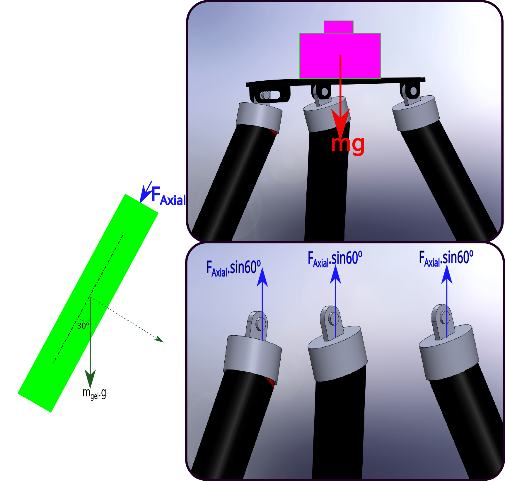

Learnings
Through this project, I developed both technical and soft skills. Technically, I gained expertise in finite element analysis (FEA) using Abaqus, CAD design with SolidWorks, and a deep understanding of the properties and behavior of hydrogels, particularly PNiPAAm. Additionally, I honed my skills in analytical modeling and deriving complex equations for smart materials. On the softer side, I improved my problem-solving abilities, conducted extensive research, and effectively communicated complex scientific concepts to a diverse audience. I also enhanced my project management skills by balancing multiple tasks and deadlines while maintaining a high level of quality and rigor.
Project Gallery
